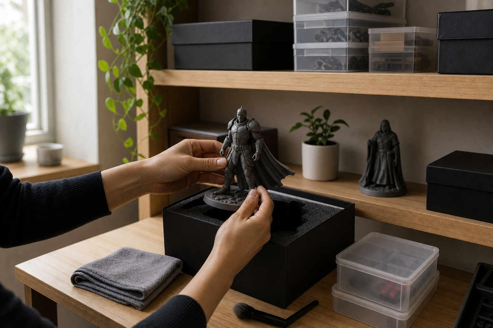

From digital to physical: turning game ideas into 3D printed objects
How game concepts become prototypes, collectibles, props, and custom printed pieces.
Read guideStudio notes
This section is built to give the site depth: practical articles, process notes, and brand-led explanations around 3D printing, product care, and custom work. It gives visitors something useful to read, not just a sales page to skim.

Each article is written as a proper long-form page with its own image and practical detail.
How game concepts become prototypes, collectibles, props, and custom printed pieces.
Read guide
A look at the workshop routine, setup, monitoring, and content capture behind the brand.
Read guide
How we turn a game idea into a playable product using Big Two as the example.
Read guide
Tailor-made graduation gifts, wedding pieces, QR code signs, and door signs.
Read guide
A rules-first look at the Big Two project, from interface clarity to launch.
Read guide
A practical guide to core ideas, prototypes, testing, scope, and launch.
Read guide
A practical look at concept, rules, testing, polish, and launch for game projects.
Read guide
A practical comparison of detail, durability, finish, cost, and best use cases.
Read guide
Design for function, tolerance, orientation, and printability from the start.
Read guide
The mistakes we see most often, and the simple checks that prevent them.
Read guide
A practical look at finish, fit, strength, and the production choices behind them.
Read guide
A step-by-step look at concept, modelling, materials, printing, finishing, and quality checks.
Read guide
From rough sketches to final geometry, this is how we keep form, scale, and printability aligned.
Read guide
PLA, resin, PETG, and flexible options, explained with the tradeoffs that matter in real use.
Read guide
A look at the bench, the cameras, the test prints, and the routine that keeps the workshop moving.
Read guide
How a commission turns into a quote, a brief, a prototype, and a finished print.
Read guide
Practical advice for unpacking, cleaning, displaying, and storing printed pieces safely.
Read guide
The extra steps that turn a print into a gift-ready product and help it survive shipping.
Read guide
Scale affects detail, strength, cost, and display space more than most people expect.
Read article
A straightforward walkthrough of inquiry, quote, prototype, revisions, and delivery.
Read article
Warping, stringing, weak supports, and layer shifts are easier to prevent than fix.
Read articleReaders should be able to understand what the workshop does, how decisions are made, and why certain materials or methods are chosen.
Long-form guides give the site topic depth, internal linking opportunities, and real informational value for search visitors.
The articles are written in the same practical, careful tone as the studio itself so the site feels like a real workshop, not a thin storefront.